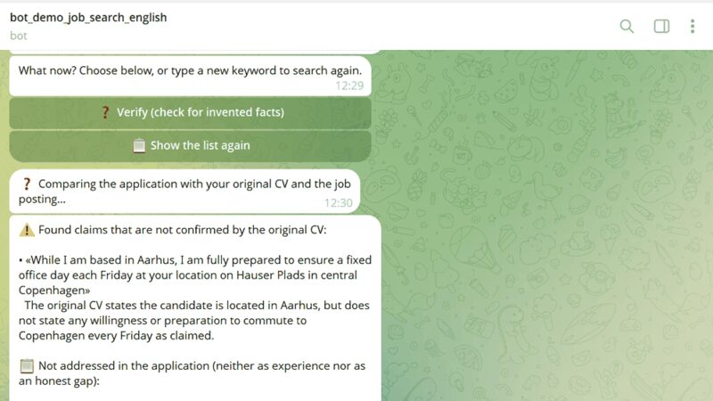

Live · try it in Telegram
AI Job Search Assistant with Verify
A Telegram bot that helps people find jobs in Denmark: it scores vacancies against your CV, writes tailored applications as PDF, and checks every letter with Verify, a built-in fact-checker that catches claims not supported by your CV.
Tech: Python · Gemini API · Telegram · Railway